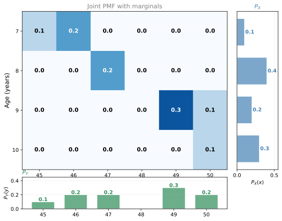
Marginal and Conditional Distributions
probability
Now that you know joint distributions, there are two important operations you can perform on them: finding the marginal distribution and the…
Now that you know joint distributions, there are two important operations you can perform on them: finding the marginal distribution and the conditional distribution.
- Marginal distribution: You have the full joint distribution of two variables, but you want the distribution of just one of them (ignoring the other). You aggregate (sum) over the variable you do not care about.
- Conditional distribution: You have the full joint distribution, but you want the distribution of one variable given that the other takes a specific value. You take a “slice” of the joint distribution.
Marginal Distributions
Intuition
Imagine you have the full distribution of ages and heights of a population. All of a sudden, you do not care about age anymore. You just want the distribution of heights. What do you do? You aggregate over all the ages. The result is called the marginal distribution of height.
A marginal distribution is simply the distribution of one variable while completely ignoring the other. It is useful for summarizing the behavior of one variable at a time.
Children Example (Age and Height)
Recall the joint PMF of our 10 children:
For example, \(P_Y(50) = \sum_i P_{XY}(x_i, 50) = 0 + 0 + 0.1 + 0.1 = 2/10\), and \(P_X(7) = 3/10\) because that is the sum of the entire first row.
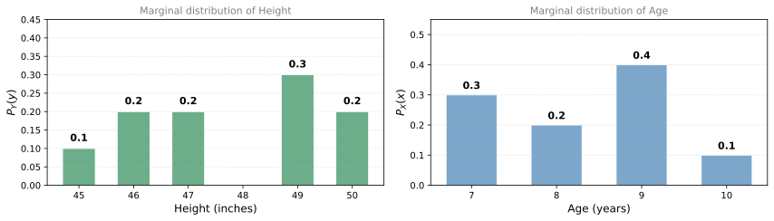
Notice that these are exactly the individual distributions we started with before constructing the joint distribution. Marginalization recovers them from the joint table.
Dice Example (Independent Variables)
For two independent dice (\(X\) = first die, \(Y\) = second die), the joint PMF is a uniform \(\frac{1}{36}\) grid. When you sum each row to get the marginal of \(X\):
\[ P_X(x) = \sum_{y=1}^{6} \frac{1}{36} = \frac{6}{36} = \frac{1}{6} \]
The same applies to \(Y\). You recover the original \(\frac{1}{6}\) for each value. This makes sense: if you already knew each die had probability \(\frac{1}{6}\) per face, marginalizing the joint just gives you that back.
Sum-of-Dice Example (Dependent Variables)
For \(X\) = first die and \(Y\) = sum of both dice, the joint PMF has a diagonal stripe pattern. When you marginalize over \(X\) (sum each row), you get the PMF of the sum:
\[ P_Y(y) = \sum_{x=1}^{6} P_{XY}(x, y) \]
For \(y = 10\): the valid cells are \((x=4, y=10)\), \((x=5, y=10)\), and \((x=6, y=10)\). Each contributes \(\frac{1}{36}\), so \(P_Y(10) = \frac{3}{36}\).
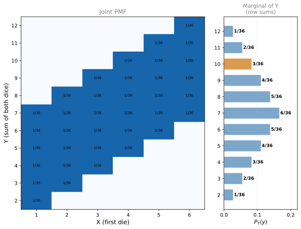
This gives the familiar triangular distribution of the sum of two dice.
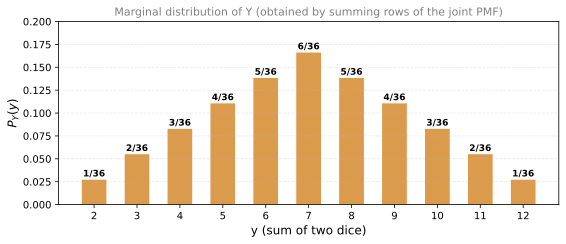
Call Center Example (Continuous)
The same idea works for continuous variables. In the call center example with waiting time (\(X\)) and customer rating (\(Y\)):
- The marginal distribution of waiting time is obtained by “collapsing” the scatter plot onto the \(X\)-axis (summing along the \(Y\)-axis).
- The marginal distribution of rating is obtained by collapsing onto the \(Y\)-axis (summing along the \(X\)-axis).
You can visualize this as slicing through the 3D density surface with a plane. The slice (integral along one axis) gives you the marginal distribution of the other variable:
The orange curve along the front face is the marginal distribution of waiting time, obtained by integrating (summing) the density surface along the customer rating axis. This is the “slice” you get when you collapse the 2D distribution down to one dimension.
General Rule
The goal of marginalization is to reduce a joint distribution (two dimensions) back to a single-variable distribution (one dimension). You sum (or integrate, for continuous) over the variable you want to eliminate:
\[ P_X(x_i) = \sum_{j} P_{XY}(x_i, y_j) \qquad \text{(sum over columns)} \]
\[ P_Y(y_j) = \sum_{i} P_{XY}(x_i, y_j) \qquad \text{(sum over rows)} \]
Review Questions
1. What is a marginal distribution?
TipAnswer
The distribution of one variable obtained by summing (or integrating) over all values of the other variable in a joint distribution. It “ignores” one variable and describes the behavior of the remaining one.
1. From the children joint PMF, compute the marginal probability \(P_Y(49)\).
TipAnswer
Sum the column for height = 49: \(0 + 0 + 0.3 + 0 = 0.3\). So \(P_Y(49) = 3/10\).
1. For two independent dice, why does the marginal of each die give \(\frac{1}{6}\) for every face?
TipAnswer
Because summing a row (or column) of the joint PMF means adding six entries of \(\frac{1}{36}\), which gives \(\frac{6}{36} = \frac{1}{6}\). Independence means the joint is just the product of the marginals, so marginalizing recovers what you started with.
1. In the sum-of-dice example, why is \(P_Y(7) = \frac{6}{36}\) the largest marginal probability?
TipAnswer
Because 7 can be formed by the most combinations of two dice: (1,6), (2,5), (3,4), (4,3), (5,2), (6,1). That means the row for \(y = 7\) has 6 non-zero entries of \(\frac{1}{36}\), giving \(P_Y(7) = \frac{6}{36}\). No other sum has as many valid pairs.
Conditional Distributions
Intuition
With a marginal distribution, you “forget” one variable and summarize the other. With a conditional distribution, you do the opposite: you fix one variable at a specific value and ask what the distribution of the other variable looks like.
For example: given that a child is 9 years old, what is the distribution of heights? You are not aggregating over all ages. You are taking a slice of the joint distribution at age = 9.
Children Example: P(Height | Age = 9)
Fix \(X = 9\) (age 9). Look at only that row of the joint PMF:
| Height | 45 | 46 | 47 | 48 | 49 | 50 |
|---|---|---|---|---|---|---|
| Joint \(P(X=9, Y=y)\) | 0 | 0 | 0 | 0 | 0.3 | 0.1 |
There is a problem: these values sum to \(0.3 + 0.1 = 0.4\), not 1. A valid probability distribution must sum to 1.
The fix is to normalize by dividing each entry by the row sum (\(P_X(9) = 0.4\)):
| Height | 45 | 46 | 47 | 48 | 49 | 50 |
|---|---|---|---|---|---|---|
| \(P(Y=y \mid X=9)\) | 0 | 0 | 0 | 0 | 3/4 | 1/4 |
Now the row sums to 1 and we have a proper distribution. The conditional probability is:
\[ P(Y=49 \mid X=9) = \frac{P(X=9, Y=49)}{P_X(9)} = \frac{3/10}{4/10} = \frac{3}{4} \]
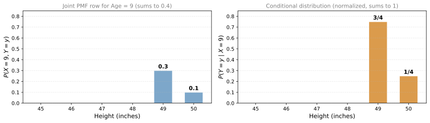
Formula for Conditional Distribution
This normalization step is exactly the conditional probability rule applied to distributions:
\[ P(Y = y \mid X = x) = \frac{P_{XY}(x, y)}{P_X(x)} \]
Where:
- \(P_{XY}(x, y)\) is the joint probability (numerator)
- \(P_X(x)\) is the marginal probability (denominator, the row sum)
- \(P(Y = y \mid X = x)\) is the conditional probability (the result)
The denominator ensures that the conditional distribution sums to 1.
Dice Example: P(Y | X = 4)
For two independent dice (\(X\) = first die, \(Y\) = second die), suppose the first die shows 4. What is the conditional distribution of the second die?
\[ P(Y = 1 \mid X = 4) = \frac{P_{XY}(4, 1)}{P_X(4)} = \frac{1/36}{1/6} = \frac{1}{6} \]
This makes sense: since the dice are independent, knowing that the first die is 4 gives no information about the second die. The conditional distribution is the same as the marginal (still uniform \(\frac{1}{6}\) for each face).
This is a key property of independent variables: conditioning does not change the distribution.
Call Center Example (Continuous)
For continuous variables, the same logic applies with density functions instead of probability mass functions:
\[ f(y \mid x) = \frac{f_{XY}(x, y)}{f_X(x)} \]
For the call center, if you want the distribution of customer ratings given a waiting time of 4 minutes, you take a vertical slice through the joint density surface at \(X = 4\) and normalize it.
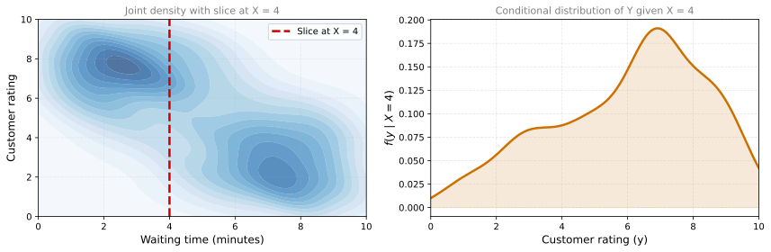
For a waiting time of 4 minutes (roughly in the middle), the conditional distribution of satisfaction shows peaks at both high and low ratings, reflecting the two clusters in the data.
The red semi-transparent plane cuts through the surface at \(X = 4\). The orange curve is the density along that slice. After normalizing (dividing by the area under the orange curve), you get the conditional distribution \(f(Y \mid X = 4)\).
Marginal vs. Conditional: Summary
| Operation | What you do | Result |
|---|---|---|
| Marginal | Sum (or integrate) over one variable | Distribution of the other variable, ignoring the first |
| Conditional | Fix one variable, normalize the slice | Distribution of the other variable, given the first |
Review Questions
1. What is the difference between a marginal and a conditional distribution?
TipAnswer
A marginal distribution ignores one variable entirely (sums over it). A conditional distribution fixes one variable at a specific value and asks what the other variable looks like given that constraint. Marginalization collapses; conditioning slices.
1. Why do you need to normalize when computing a conditional distribution from the joint PMF?
TipAnswer
Because the row (or column) of the joint PMF corresponding to a fixed value of one variable does not sum to 1. It sums to the marginal probability of that value. Dividing by that marginal ensures the conditional distribution is a valid probability distribution (sums to 1).
1. For two independent dice, what is \(P(Y=3 \mid X=5)\)?
TipAnswer
\(P(Y=3 \mid X=5) = \frac{P(X=5, Y=3)}{P_X(5)} = \frac{1/36}{1/6} = \frac{1}{6}\). Since the dice are independent, knowing the first die does not affect the second. The conditional equals the marginal.
1. If two variables are independent, what happens to the conditional distribution?
TipAnswer
It equals the marginal distribution. If \(X\) and \(Y\) are independent, then \(P(Y=y \mid X=x) = P_Y(y)\) for all \(x\). Knowing the value of \(X\) provides no information about \(Y\), so the distribution of \(Y\) does not change.
1. Using the children dataset, compute \(P(Y=46 \mid X=7)\).
TipAnswer
\(P(Y=46 \mid X=7) = \frac{P(X=7, Y=46)}{P_X(7)} = \frac{2/10}{3/10} = \frac{2}{3}\). Of the 3 children who are age 7, 2 of them are 46 inches tall.
2. Which of the following statements are true regarding marginal and conditional distributions? Select all that apply.
- Marginal distribution summarizes the behavior of one variable at a time by aggregating over the other variable(s).
- To find the marginal distribution for a variable, probabilities are summed over all variable values, either by adding columns or rows in the joint distribution table.
- Conditional distribution involves taking slices of the joint distribution to focus on specific conditions.
TipAnswer
a, b, and c. All three statements are correct. Marginal distributions aggregate (sum) over one variable to get the distribution of the other. This is done by summing rows or columns. Conditional distributions fix one variable at a specific value (take a slice) and normalize.
3. Suppose that the joint probability distribution of two random variables \(X\) and \(Y\) is given by: \(P(X=1, Y=1) = 0.05\), \(P(X=1, Y=2) = 0.15\), \(P(X=2, Y=1) = 0.1\), \(P(X=2, Y=2) = 0.2\), \(P(X=3, Y=1) = 0.15\), \(P(X=3, Y=2) = 0.35\). What is \(P(X=3 \mid Y=1)\)?
- 0.15
- 0.25
- 0.5
- 0.333
TipAnswer
c. \(P(X=3 \mid Y=1) = \frac{P(X=3, Y=1)}{P(Y=1)} = \frac{0.15}{0.05 + 0.10 + 0.15} = \frac{0.15}{0.30} = 0.5\).
Lab: Dice Simulations with NumPy
This lab shows how to use NumPy to simulate rolling dice, from a single fair die up to loaded (unfair) dice and dependent rolls. You will see how probability concepts like mean, variance, covariance, and conditional probability appear naturally in simulated experiments.
Representing a Die
The first step is to represent a die as a NumPy array. Each element corresponds to one face:
import numpy as np
import seaborn as sns
import matplotlib.pyplot as plt
# A standard 6-sided die
n_sides = 6
dice = np.array([i for i in range(1, n_sides + 1)])
dicearray([1, 2, 3, 4, 5, 6])Rolling a Fair Die
To simulate rolling a fair die, use np.random.choice, which picks a random element from the array with equal probability (uniform distribution):
# Single roll
np.random.choice(dice)np.int64(2)To simulate many rolls at once, use a list comprehension and store results in a NumPy array:
# Roll 20 times
n_rolls = 20
rolls = np.array([np.random.choice(dice) for _ in range(n_rolls)])
print(f"Results: {rolls}")
print(f"Mean: {np.mean(rolls):.2f}")
print(f"Variance: {np.var(rolls):.2f}")Results: [5 1 1 4 5 2 1 6 2 6 3 6 1 4 3 5 2 1 3 3]
Mean: 3.20
Variance: 3.16With only 20 rolls, the histogram probably does not look uniform. That is normal for a small sample:
%config InlineBackend.figure_formats = ['svg']
sns.histplot(rolls, discrete=True)
plt.title(f"Histogram of {n_rolls} rolls")
plt.show()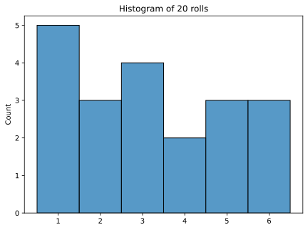
Now try 20,000 rolls. With a large sample, the histogram converges to the true uniform distribution:
n_rolls = 20_000
rolls = np.array([np.random.choice(dice) for _ in range(n_rolls)])
print(f"Mean: {np.mean(rolls):.2f} (theoretical: 3.50)")
print(f"Variance: {np.var(rolls):.2f} (theoretical: 2.92)")
sns.histplot(rolls, discrete=True, stat="probability")
plt.title(f"Histogram of {n_rolls} rolls")
plt.show()Mean: 3.51 (theoretical: 3.50)
Variance: 2.92 (theoretical: 2.92)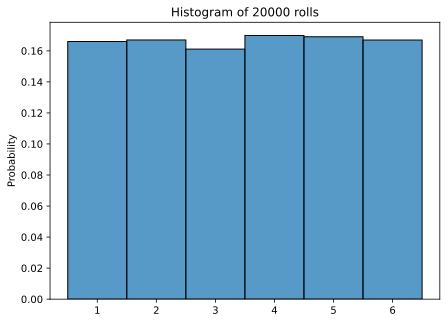
With enough rolls, the mean converges to 3.5 and the variance to approximately 2.92, matching the theoretical values for a fair 6-sided die.
Summing Two Dice
Now roll two dice and record their sum. Since each roll is stored in a NumPy array, the sum is simply the element-wise addition of the two arrays:
n_rolls = 20_000
first_rolls = np.array([np.random.choice(dice) for _ in range(n_rolls)])
second_rolls = np.array([np.random.choice(dice) for _ in range(n_rolls)])
sum_of_rolls = first_rolls + second_rolls
print(f"Mean of first rolls: {np.mean(first_rolls):.2f}")
print(f"Variance of first rolls: {np.var(first_rolls):.2f}")
print(f"")
print(f"Mean of second rolls: {np.mean(second_rolls):.2f}")
print(f"Variance of second rolls: {np.var(second_rolls):.2f}")
print(f"")
print(f"Mean of sum: {np.mean(sum_of_rolls):.2f}")
print(f"Variance of sum: {np.var(sum_of_rolls):.2f}")
print(f"")
print(f"Covariance matrix:")
print(np.cov(first_rolls, second_rolls))Mean of first rolls: 3.51
Variance of first rolls: 2.90
Mean of second rolls: 3.51
Variance of second rolls: 2.93
Mean of sum: 7.02
Variance of sum: 5.85
Covariance matrix:
[[2.89940925 0.01177768]
[0.01177768 2.93053522]]The covariance between the first and second rolls is very close to zero because the two dice are independent. The mean of the sum equals the sum of the means, and the variance of the sum equals the sum of the variances (as expected for independent variables).
sns.histplot(sum_of_rolls, stat="probability", discrete=True)
plt.title(f"Histogram of sum of two dice ({n_rolls} experiments)")
plt.show()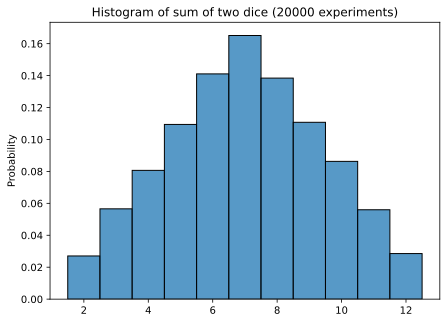
The sum of two dice produces the familiar triangular distribution, peaking at 7.
Loaded (Unfair) Dice
To simulate a loaded die, pass a probability vector to the p parameter of np.random.choice. The probabilities must sum to 1:
# A loaded die: side 6 has probability 0.5, the rest share 0.5 equally
probs = np.array([0.1, 0.1, 0.1, 0.1, 0.1, 0.5])
n_rolls = 20_000
loaded_rolls = np.array([np.random.choice(dice, p=probs) for _ in range(n_rolls)])
print(f"Mean: {np.mean(loaded_rolls):.2f}")
print(f"Variance: {np.var(loaded_rolls):.2f}")
sns.histplot(loaded_rolls, discrete=True, stat="probability")
plt.title("Loaded die (side 6 has probability 0.5)")
plt.show()Mean: 4.52
Variance: 3.22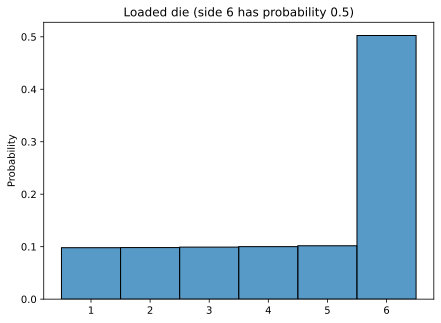
The histogram clearly shows that side 6 appears about half the time, as expected from our probability weights.
Dependent Rolls
Finally, simulate a scenario where the second roll depends on the first. Suppose you only roll a second time if the first roll is 4 or higher. Otherwise, the second “roll” is 0 (no roll taken):
n_rolls = 20_000
first_rolls = np.array([np.random.choice(dice) for _ in range(n_rolls)])
# Second roll only happens if first roll >= 4
second_rolls = np.array([
np.random.choice(dice) if first >= 4 else 0
for first in first_rolls
])
sum_of_rolls = first_rolls + second_rolls
print(f"Mean of sum: {np.mean(sum_of_rolls):.2f}")
print(f"Variance of sum: {np.var(sum_of_rolls):.2f}")
print(f"")
print(f"Covariance matrix:")
print(np.cov(first_rolls, second_rolls))Mean of sum: 5.26
Variance of sum: 12.78
Covariance matrix:
[[2.93934072 2.65259038]
[2.65259038 4.53382908]]Notice that the covariance is now positive (not near zero). This makes sense because when the first roll is high (4, 5, or 6), the second roll happens and adds to the total. When the first roll is low (1, 2, or 3), the second roll is 0. The two variables are no longer independent.
sns.histplot(sum_of_rolls, stat="probability", discrete=True)
plt.title("Sum with dependent rolls (second roll only if first >= 4)")
plt.show()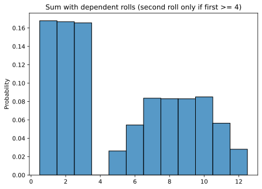
The resulting distribution is no longer the simple triangle you saw with independent rolls. It has an irregular shape because low first-roll values (1, 2, 3) contribute only themselves to the sum, while high first-roll values (4, 5, 6) contribute themselves plus a second independent roll.
This lab demonstrates how probability concepts (independence, covariance, conditional probability) manifest in concrete simulations. With just a few lines of NumPy code, you can explore and verify the theoretical results from earlier sections.